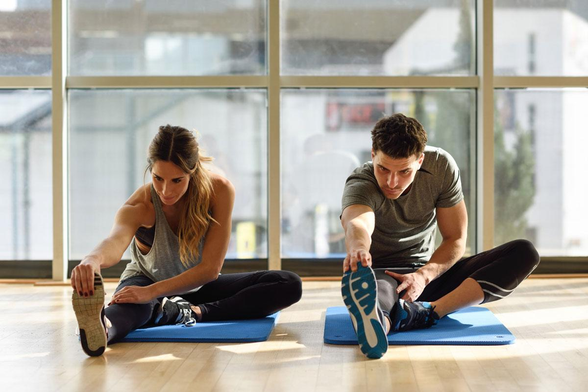
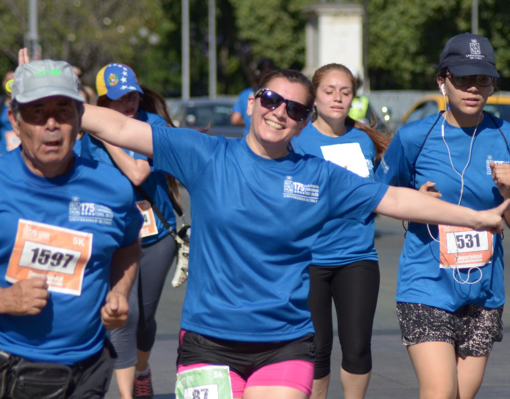
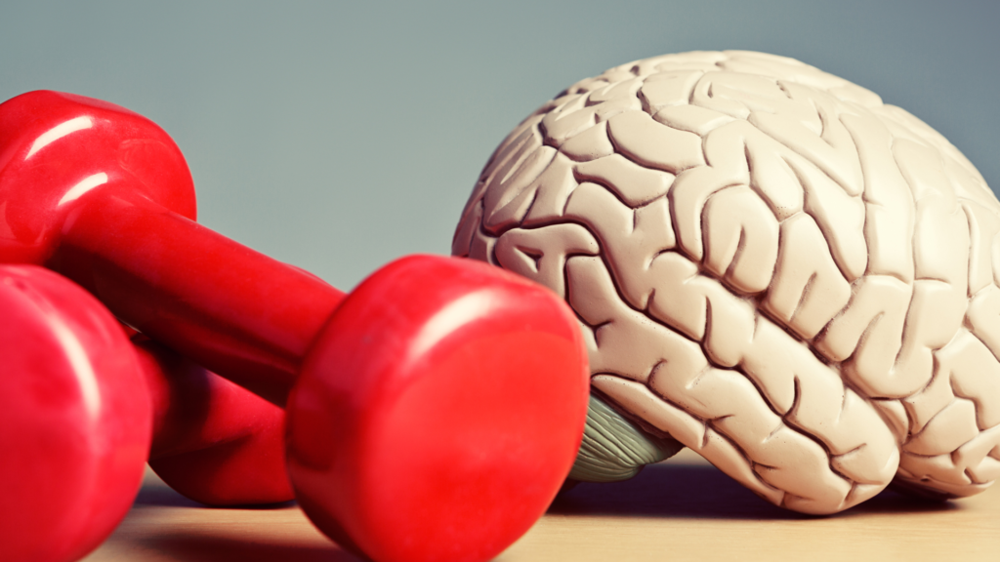

La Educación Física aporta de manera directa y significativa a la salud integral, entendida como el bienestar físico, mental, emocional y social de las personas. No se trata únicamente de practicar deportes o realizar ejercicios, sino de formar hábitos saludables que influyen en la calidad de vida a corto y largo plazo. Organismos internacionales como la Organización Mundial de la Salud destacan que la actividad física regular es uno de los factores clave para prevenir enfermedades y fortalecer el bienestar general. Desde esta perspectiva, la Educación Física se convierte en un pilar esencial dentro de la formación integral de niños, adolescentes y adultos.
Los beneficios son amplios y abarcan distintas dimensiones. En el plano físico, mejora la resistencia cardiovascular, fortalece músculos y huesos, optimiza la coordinación y ayuda a prevenir enfermedades como la obesidad, la diabetes y la hipertensión. En el ámbito mental, reduce el estrés y la ansiedad, favorece la concentración y estimula la liberación de endorfinas, lo que contribuye a un mejor estado de ánimo y rendimiento académico. Desde el punto de vista emocional, fortalece la autoestima y enseña a manejar la frustración y la disciplina. En el aspecto social, promueve el trabajo en equipo, el respeto por las normas y la convivencia armónica. En conjunto, estos beneficios demuestran que la Educación Física no solo impacta el cuerpo, sino que influye en la formación integral del individuo.


La respuesta es sí. Limitar la actividad física al entorno escolar reduce su verdadero potencial. Incorporar el movimiento en la vida cotidiana ya sea caminando, practicando algún deporte, realizando ejercicios en casa o participando en actividades recreativas es fundamental para mantener una buena salud integral. Adoptar hábitos activos permite combatir el sedentarismo, mejorar la energía diaria y prevenir enfermedades futuras. En definitiva, hacer de la actividad física una práctica constante no es solo una recomendación, sino una inversión en bienestar y calidad de vida.